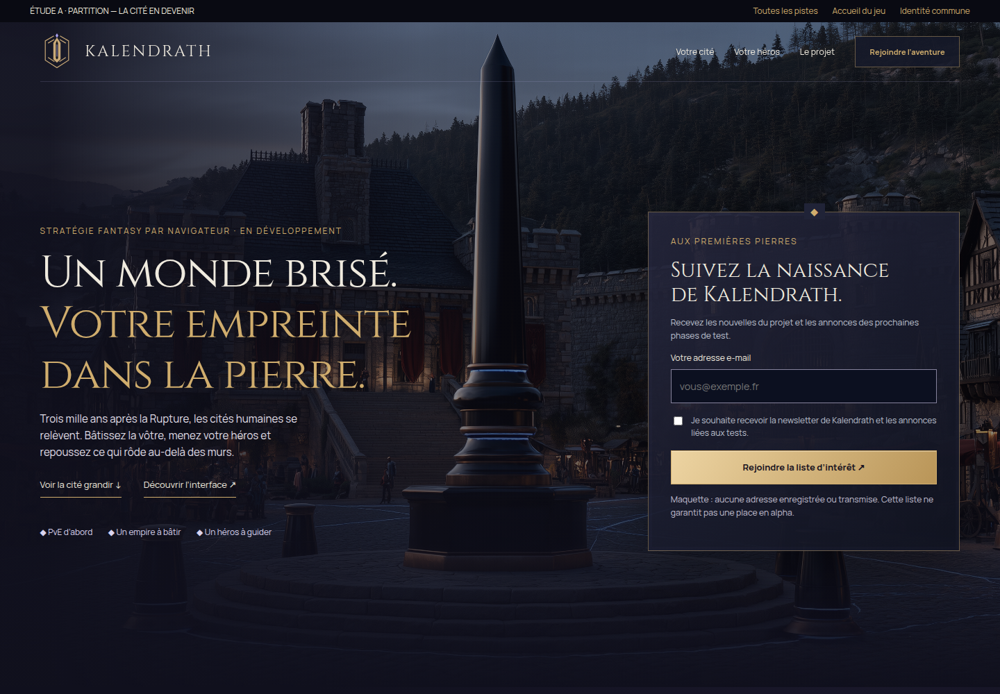
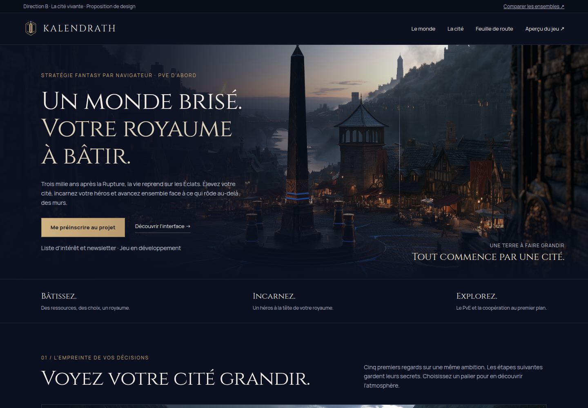
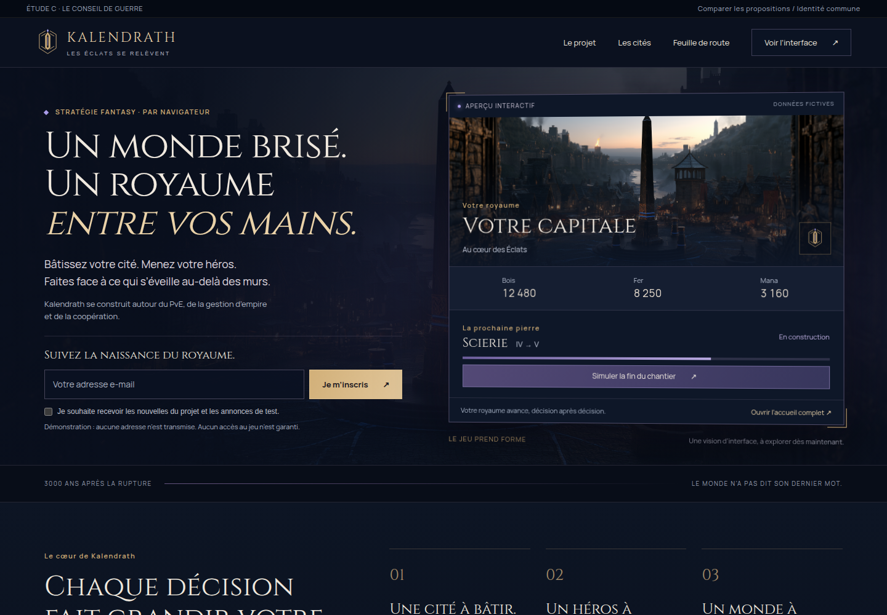

01 / LA PROGRESSION
Partition
La cité grandit sous vos yeux. Une vitrine construite autour de ses étapes, prolongée par un accueil de jeu équilibré.
 Kalendrath
KalendrathExploration 02 · 17 novembre 2026 · Maquettes privées
La progression de Partition, le bleu nuit et le violet de votre interface, le sceau des Obélisques. Trois propositions pour rapprocher la promesse de la vitrine de l’expérience quotidienne du jeu.

La cité grandit sous vos yeux. Une vitrine construite autour de ses étapes, prolongée par un accueil de jeu équilibré.

Le décor donne le rythme. Des scènes amples, des panneaux en retrait et une présence arcanique discrète.

Le jeu se montre dès la vitrine. Dans la cité, les priorités, les chantiers et les mouvements se lisent d’un regard.
La continuité
Surfaces bleu nuit, accents violet-bleu, ressources toujours identifiables, cité illustrée et mouvements à portée de main.
La matière
Des illustrations de Kalendrath et quelques effets de lumière ciblés. Les principes de l’audit Rakorn inspirent la mise en scène ; ses visuels ne sont pas repris.
La clarté
Navigation nommée, actions remontées, états lisibles sans survol et animations arrêtées si vous préférez réduire les mouvements.
Revue de conception : chiffres, comptes à rebours et actions de jeu simulés. Les formulaires ne collectent aucune adresse. Les paliers tardifs restent inconnus dans la vitrine. Ces propositions ne fixent ni les règles ni l’équilibrage du jeu.